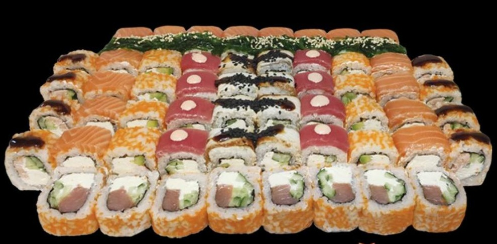

★★★★★
Все було неймовірно смачно і доставочка вчасно, дякую ❤️
Готуємо в Україні з 2019 року. Два заклади: Корсунь-Шевченківський і Городище. Свіжий лосось, тигрова креветка, японський рис і авторські соуси — щоранку нова партія.
«Ічіґо-ічіе» — давня японська думка про те, що кожна зустріч за столом неповторна, тож варта найкращого. Тому ми ріжемо роли вручну, рис варимо у мідних казанах, а лосось закладаємо за хвилину до подачі. Це не швидко. Зате смак — справжній.

«Шінобі» — це історія родини, яка повернулася у Корсунь і відкрила суші-кухню на вулиці Ярослава Мудрого. Тут немає конвеєра: кожен рол ріжуть руками, а рис варять у мідних казанах за технологією Едо.
Лосось і креветки приймаємо щоранку, не зберігаємо понад добу.
Лише натуральні соуси, маринади та авторські емульсії власного приготування.
Середній час приготування замовлення з 6 ролів — як в Осаці.
Кожен другий гість повертається — це і є наш найточніший показник.
31 оцінка на Google · середній бал 5,0
Все було неймовірно смачно і доставочка вчасно, дякую ❤️
Смачно і недорого. Молодці! Замовляємо вже втретє — все ідеально.
Зробили святковий сет на День Народження. Мені здається, бракує тільки більшого приміщення — все інше на відмінно з плюсом.
Оберіть найближчий до вас — приймемо замовлення на самовивіз або доставку.
Щоб показати інтерактивну мапу, Google Maps потребує згоди на використання cookie. Або відкрийте її окремо за маршрутом нижче.